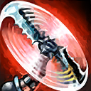
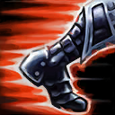
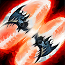
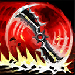

起手裝備
 長劍
長劍
嗜血者先補高物攻與續航，C44 第二件提供安全距離傷害，接多明尼克、無盡、狂暴利刃；鞋改狂戰士／槍銅，移除舊蒐集者、火炮預設。 長劍起手保留；五成裝與獨立二、三級鞋線已分開，未照抄外站 Galeforce 鞋附魔欄。


五件成裝與鞋子分開列示；起手與核心是購買路線，不是額外佔用的成裝欄位。鞋子完成時機仍依對線壓力與回城金錢調整。


征服者、兇蠻、敏捷、骨甲保留，致命一擊改斷切支援第一輪高血量目標普攻；不把額外賞金當必帶收割符文的理由。


預設閃現＋光盾，保住達瑞文第一輪輸出；光盾在爆發落下前使用，不拿它代替躲避關鍵控制。
加點優先：Q > W > E
Q > W > E：飛斧傷害優先，二技次滿；接斧刷新二技冷卻不代表免費施放，持續追擊仍要看魔力。
接住迴旋飛斧、擊殺士兵與野怪或摧毀防禦塔可累積偶像崇拜；擊殺敵方英雄時依疊層獲得額外金幣。
有後續版本調整的項目以較新數值為準；未列出者不代表完整技能成長表。

強化下一次普攻並讓斧頭彈回空中；依攻擊時的移動方向控制落點，接住後可持續維持飛斧。
有後續版本調整的項目以較新數值為準；未列出者不代表完整技能成長表。
有後續版本調整的項目以較新數值為準；未列出者不代表完整技能成長表。

短時間提高跑速與攻速；接住迴旋飛斧會刷新技能冷卻，可反覆施放維持追擊與走砍節奏。
有後續版本調整的項目以較新數值為準；未列出者不代表完整技能成長表。

橫向丟出雙斧造成傷害、把敵人擊到一旁並緩速，可用來打斷突進、封鎖走位或協助追擊。

投出往返飛斧造成物理傷害；可依目前偶像層數處決生命足夠低的英雄。
有後續版本調整的項目以較新數值為準；未列出者不代表完整技能成長表。
有後續版本調整的項目以較新數值為準；未列出者不代表完整技能成長表。
保留 7.3a 飛斧、攻速、大絕係數；雙斧連招補上預先維持雙斧條件，不再用一次 Q 就標示已取得兩把飛斧。
1技啟動飛斧 → 第一把強化普攻 → 2技加速追擊 → 第二把飛斧 → 接斧刷新加速 → 持續壓制
此連招以已先維持兩把飛斧為前提；一次開一技不會直接取得雙斧。先安排斧頭落在安全側，再靠接斧刷新二技，注意反覆施放仍需魔力。控制尚未交時打一至兩斧就撤，不為接斧破壞站位。
3技打斷擊退 → 2技拉開或追擊 → 1技補飛斧 → 強化普攻 → 第二斧輸出 → 4技收尾
三技應在敵方突進路線上施放，成功打斷後再決定追擊或後撤。大絕可在目標被緩速時施放，提高去回兩段命中的機會。
4技先手出斧 → 2技調整位置 → 普攻壓低血量 → 再次施放收回 → 回程後補斧
近中距離先丟大絕，再利用二技移動改變回程路線；目標走位確定後重施收回，讓回程重新以完整傷害命中。
斧頭落點會受到攻擊出手時移動方向影響；先規劃下一步站位，再決定是否接斧。
偶像崇拜只在擊殺敵方英雄時轉為額外金幣，死亡會損失部分疊層，高層數時應優先尋找安全擊殺。
一級開迴旋飛斧，利用強化普攻與雙斧節奏主動控制兵線和換血。攻擊前先用移動方向安排斧頭落點，讓落點留在安全側；偶像崇拜累積越高越要降低無謂風險，避免為接一把斧頭走進控制技能。
嗜血者與 C44 成形後，先讓斧頭落在安全側再持續輸出，多明尼克第三件處理前排。C44 的距離增傷不等於永久增程，參與擊殺後才有短暫額外射程；追擊要同時看接斧位置、二技魔力和敵方控制。
團戰先攻擊最近且安全的目標，接斧路線必須服從站位而不是反過來。無法安全接住時寧可放棄斧頭並重新開一技；三技留給刺客或開戰位移，大絕則用於穿過多人或處理殘血。存活持續投斧比冒險追後排更有價值。
剎雅能用倒鉤與大絕反制向前追斧，法洛士控制和凱特琳陷阱能封住落點；不安全的斧頭直接放棄，比丟命失去偶像層數更好。 威脅名單採同分路指南，較有利名單保留機制判斷並移除與威脅名單重疊者；現有輔助組合逐項複核技能互動後保留。
對局名單是機制與分路判斷，不代表固定勝率；需同時看雙方熟練度、兵線與陣容。
剎雅能用倒鉤與大絕反制向前追斧，法洛士控制和凱特琳陷阱能封住落點；不安全的斧頭直接放棄，比丟命失去偶像層數更好。
下列輔助配合以技能互動為依據。雷歐娜、納帝魯斯、瑟雷西仍可配合本頁打法；先確認對手輔助的控制與兩邊召喚師技能，單一射手對局不代表必勝。
二級強開與多段控制能放大達瑞文前期傷害，最適合滾雪球。
穩定鉤鎖與定身能替達瑞文固定接斧位置並快速擊殺。
鉤鎖可主動開戰，燈籠則能在達瑞文壓線過深時提供退路。
依達瑞文的高物攻飛斧強化普攻路線選擇替換；先看實際死亡與傷害不足原因。
依敵方前排成形調整
觸發：敵方前排已形成高生命或高防禦，正面輸出受阻。
達瑞文保留前述五成裝加獨立鞋線；同一格不同情境擇一替換，不全部加購。
先保留預設穿甲核心，單一裝備格的調整不代表重買另一套。
保命格可提早
觸發：被同一輪突進秒殺，無法打出主要技能與普攻。
狂暴利刃 → 守護天使
主要死亡原因是刺客或突進一次切入，且隊友能掩護復活位置。
狂暴利刃整格換守護天使，犧牲部分高物攻飛斧強化普攻或持續防禦；復活後無人接應時先改善站位。
狂暴利刃 → 魔提斯深淵
敵方主要擊殺來源是魔法爆發，且尚未裝另一件生命線裝備。
以狂暴利刃換魔提斯處理魔法爆發；不把魔防誤當通用抗物理方案。
復活與魔法生命線處理的傷害不同，按實際威脅擇一；盾弓與魔提斯不重複保留。
先判斷控制能否解除
觸發：可解除的禁錮、暈眩等控制反覆中斷輸出。
狂暴利刃 → 水星彎刀
可解除的控制反覆讓自己無法輸出，且閃現不能解決。
以狂暴利刃換水星彎刀；主動要手動使用，不能解除擊飛或擊退，也不是舊版附魔。
水星彎刀是成裝，不佔鞋子升級；擊飛、擊退須靠預先走位或隊友保護。
治療已影響集火時
觸發：敵方持續治療抵銷集火，且團隊缺乏穩定重創。
多明尼克的問候 → 致死宣告
敵方治療或吸血持續影響勝負，隊友無法穩定施加重創。
致死宣告替換多明尼克；保留暴擊、穿甲與重創，不並排買兩件。
需要時先用死刑宣告過渡；不要把所有敵方英雄都當成必出重創的理由。
團隊無其他反盾者才承擔
觸發：大量反覆護盾持續阻止集火，且自己能穩定命中目標。
狂暴利刃 → 巨蛇鋒牙
隊友無法施加反盾，且護盾確實抵銷主要輸出。
狂暴利刃換巨蛇鋒牙會犧牲原末段功能；達瑞文仍需保留主要輸出核心，只有單一小護盾時不換。
反盾屬團隊分工，不為一個小盾放棄整條普攻或技能路線。
7.3d差異核對：本頁核對官方英雄／裝備差異與現行配置參照；未列的技能不表示已完成逐級實測。查看校正範圍。
本頁校正版本：7.3d；校正日期：2026-10-25。
參考來源標示版本：7.3c
本輪核對官方版本差異、道具/符文引用、五成裝與鞋線、逐級加點及情境替換一致性。Tier及玩法屬本站編輯判斷，不是官方排名或台服勝率；未公開的全級技能表不推算。
評級理由：7.3c 維持 C（本站判斷）。刷新指南確認為 7.3b 後，依同分路 C 取代舊 S；飛斧與賞金仍能滾雪球，但失誤成本及接斧站位要求高，非官方勝率結論。 7.3c 未改動此分路的英雄數值，沒有新證據只因版本號而升降。
Riot 官方資料 ↗ · Riot 官方資料 ↗ · Riot 官方資料 ↗ · Riot 官方資料 ↗ · Riot 官方資料 ↗ · WildRiftFire 參考攻略 ↗
7.3c 的直接英雄倍率改動屬符文大亂鬥；本召喚峽谷配置承接 7.3b。未把模式專屬增削轉為峽谷增削。
五件成裝、獨立鞋線、起手、核心、情境替換引用與一般符文列別均重新檢查；移除裝備不列入當前推薦。
歷史資料有後續調整時，以較新版本數值為準。
| 項目 | 調整前 | 調整後 |
|---|---|---|
| 額外物攻係數 | 80%/90%/100%/110% | 90%/100%/110%/120% |
| 項目 | 調整前 | 調整後 |
|---|---|---|
| 攻速 | 20%/25%/30%/35% | 25%/30%/35%/40% |
| 項目 | 調整前 | 調整後 |
|---|---|---|
| 額外物攻係數 | 130% | 150% |
歷史資料有後續調整時，以較新版本數值為準。
| 項目 | 調整前 | 調整後 |
|---|---|---|
| 每級物攻 | 4.5 | 3.8 |
| 項目 | 調整前 | 調整後 |
|---|---|---|
| 賞金 | 80 +（層數）× 4 | 60 +（層數）× 3 |
| 項目 | 調整前 | 調整後 |
|---|---|---|
| 傷害 | 45 / 50 / 55 / 60 + 100 / 110 / 120 / 130% | 45 / 50 / 55 / 60 + 80 / 90 / 100 / 110% |
| 項目 | 調整前 | 調整後 |
|---|---|---|
| 每次命中傷害衰減 | 8%（最低40%） | 5%（最低50%） |
| 大絕處決條件 | — | 目標當前生命 < 目前偶像層數 |
| 項目 | 調整前 | 調整後 |
|---|---|---|
| 基礎生命 | 630 | 650 |
| 每級生命成長 | 128 | 132 |